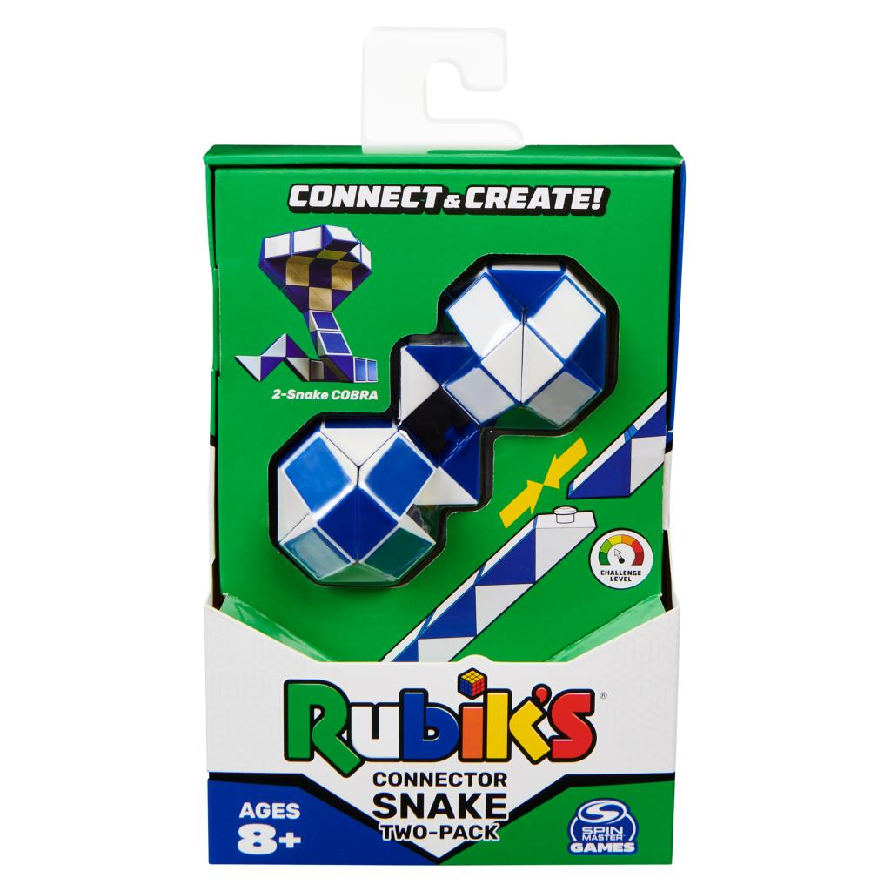

Rubik’s Connector Snake 2-Pack
The Rubik’s Snake is a toy with 24 wedges identically shaped like prisms. The wedges
are connected, by spring bolts, such that they can be twisted, but not separated. Through this twisting,
the Rubik’s Snake can attain positions including a straight line, a ball, a dog, a duck, a rectangle, a
snake, and many more imaginative shapes and figures. With this two-pack of Connector Snakes, you can
snap two or more snakes together to build imaginative creations like a bunny, cobra, dinosaur, or
lobster! The more connector snakes, the more endless possibilities in this 3D puzzle. Invented in 1974
by Ernő Rubik, the original color-matching puzzle toy- the Rubik’s Cube- was created to help students
understand three-dimensional problems. The prototype Magic Cube did things that the world had not seen
before. It turned, it twisted and yet it did not break. Adding 54 colorful stickers to the six sides
gave the puzzle its iconic look. Over 40 years of history has led the Rubik’s Cube to become one of the
best-selling toys ever. With the new Rubik’s Connector Snake- connect your Snakes and create new forms
to become the puzzle master of your house. Show us what you can build with this toy! This smart puzzle
makes the perfect gift idea for people of all ages or a stocking stuffer for anyone who loves a
challenge. Share your creativity on our social channels using #RubiksSnake.